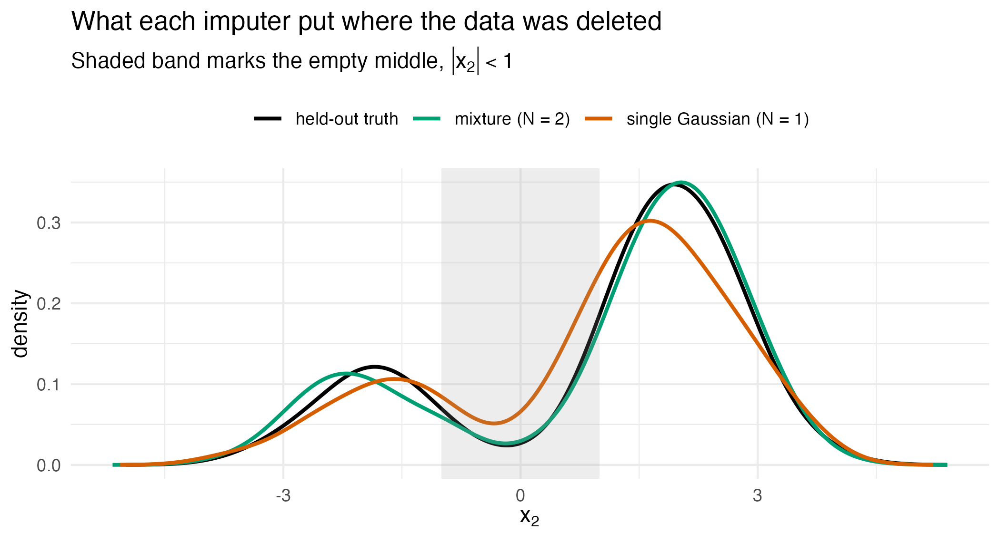

Imputing missing data with a mixture
Source:vignettes/articles/extended/missing_data.Rmd
missing_data.Rmd
has_ggplot2 <- requireNamespace("ggplot2", quietly = TRUE)
has_mice <- requireNamespace("mice", quietly = TRUE)The problem
An analyst has two measurements per unit. The scatter falls into two clear clusters with almost nothing between them, and a good half of the second measurement never came back from the field. The question is not whether an imputer will run. It is: my data has two clusters and an empty gap between them, so if I let a standard imputer fill the holes, will it put values in the gap where I know there is no mass, and will that move the mean I am going to report?
This vignette answers both halves on a synthetic two-cluster toy where the values that went missing are retained, so every imputation can be scored against the truth it was hiding.
Package capabilities
Imputation here is conditioning. If the joint distribution of the
data is a Gaussian mixture, the conditional distribution of a missing
entry given the observed entries of its own row is itself a Gaussian
mixture, available in closed form through the Schur-complement algebra
of gmm_conditionalise(). Nothing is simulated to get
it.
gmm_impute() fits that mixture to a matrix containing
holes and draws m completed datasets from the per-row
conditionals. Its N argument is the number of mixture
components, chosen by the Bayesian information criterion when left at
its default. A mixture can be multimodal and can give each component its
own spread, which neither a single-Gaussian model nor a linear-Gaussian
conditional such as normal regression imputation can.
gmm_complete() extracts one completed dataset.
proxy_pool() combines an estimand across the completions,
and proxy_fmi() reports the fraction of missing
information. For a column mean the pooling is closed form – the limit of
the between-imputation variance as the number of completions
m grows without bound – so no Monte Carlo noise enters at
the pooling step. For any other estimand, as_mids()
packages the completions as a mice object so the joint
mixture imputations flow into mice::pool() unchanged:
proxymix supplies the imputation model, mice the
pooling.
Addressing the problem
A two-cluster toy with the truth retained
Two groups, each a tight cloud, with a positive within-group
association between x1 and x2. This is a
synthetic toy: the complete data is generated first and kept, then part
of x2 is deleted, so the held-out values are available to
score against. The chance of an entry going missing depends on the
observed x1 and not on the hidden x2 itself,
which is the missing-at-random setting.
set.seed(20260620)
n <- 600L
lab <- sample(c(-1, 1), n, replace = TRUE)
x1 <- 2 * lab + rnorm(n, 0, 0.6)
x2 <- 2 * lab + 0.5 * (x1 - 2 * lab) + rnorm(n, 0, 0.6)
truth <- cbind(x1 = x1, x2 = x2)
x_holes <- truth
missing <- runif(n) < plogis(0.6 * x1)
x_holes[missing, "x2"] <- NA
frac_missing <- mean(missing)The marginal distribution of x2 is bimodal, one cluster
near
and one near
,
with little mass between them. Writing the empty middle as the interval
,
the values that were deleted put only a small share of their mass
there.
Impute with a mixture, and with a single Gaussian
imp <- gmm_impute(x_holes, N = 2L, m = 20L, seed = 1L)
imp
#> <gmm_imputation>: m = 20 completions, K = 2 components, p = 2
#> mechanism : missing at random
#> missing : x1 0%, x2 53%A single completed dataset has no holes:
done <- gmm_complete(imp, 1L)
anyNA(done)
#> [1] FALSEForcing one component reproduces the multivariate-normal assumption.
imp1 <- gmm_impute(x_holes, N = 1L, m = 20L, seed = 1L)
done1 <- gmm_complete(imp1, 1L)| Source | Share of values with |
|---|---|
| held-out truth | 0.069 |
| mixture imputation (N = 2) | 0.084 |
| single-Gaussian imputation (N = 1) | 0.184 |
The shape of the imputations
dens_df <- function(v, label) {
d <- density(v)
data.frame(x2 = d$x, density = d$y, source = label,
stringsAsFactors = FALSE)
}
plot_df <- rbind(
dens_df(truth[missing, "x2"], "held-out truth"),
dens_df(done[missing, "x2"], "mixture (N = 2)"),
dens_df(done1[missing, "x2"], "single Gaussian (N = 1)")
)
plot_df$source <- factor(
plot_df$source,
levels = c("held-out truth", "mixture (N = 2)",
"single Gaussian (N = 1)")
)
ggplot2::ggplot(plot_df, ggplot2::aes(x2, density, colour = source)) +
ggplot2::geom_line(linewidth = 0.9) +
ggplot2::annotate("rect", xmin = -1, xmax = 1, ymin = -Inf, ymax = Inf,
fill = "grey60", alpha = 0.18) +
ggplot2::scale_colour_manual(
name = NULL,
values = c("held-out truth" = "#000000",
"mixture (N = 2)" = "#009E73",
"single Gaussian (N = 1)" = "#D55E00")
) +
ggplot2::labs(
x = expression(x[2]), y = "density",
title = "What each imputer put where the data was deleted",
subtitle = expression("Shaded band marks the empty middle, " *
group("|", x[2], "|") < 1)
) +
ggplot2::theme_minimal(base_size = 11) +
ggplot2::theme(legend.position = "top")
Density of the deleted values against the values each imputer supplied in their place. The truth peaks at = and , the mixture imputation at and , and the single-Gaussian imputation at and . Between its peaks the single-Gaussian density falls only to 0.051 against the truth’s 0.024. It puts 0.184 of the imputed values in the shaded band, where the truth has 0.069. Each imputation curve is drawn from the first of the 20 completions of its imputer.
Pooling a column mean
pooled <- proxy_pool(imp, "x2")
pooled1 <- proxy_pool(imp1, "x2")
fmi_mix <- proxy_fmi(imp, "x2")
mean_truth <- mean(truth[, "x2"])
err_mix <- abs(pooled$estimate - mean_truth)
err_one <- abs(pooled1$estimate - mean_truth)| Estimate of the mean of | Estimate | SE | CI lower | CI upper | Absolute error |
|---|---|---|---|---|---|
| complete-data truth | 0.0423 | – | – | – | 0.0000 |
| available cases only | -1.0809 | – | – | – | 1.1232 |
| mixture (N = 2) | 0.0431 | 0.0913 | -0.1358 | 0.2221 | 0.0008 |
| single Gaussian (N = 1) | 0.0200 | 0.0937 | -0.1638 | 0.2039 | 0.0223 |
Any other estimand, through mice
| term | estimate | std.error | statistic | df | p.value |
|---|---|---|---|---|---|
| (Intercept) | -0.037 | 0.039 | -0.942 | 67.970 | 0.350 |
| x1 | 0.942 | 0.019 | 49.020 | 57.095 | < 0.001 |
Pooled over the mixture completions, the slope of on is 0.942 with a standard error of 0.019.
Interpretation
Of the 600 rows, 320 lost their x2, or 53 per cent. Over
those deleted entries the truth placed 6.9 per cent of its mass in the
empty middle
.
In the first completion of each imputer, the mixture put 8.4 per cent
there and the single Gaussian 18.4 per cent. Averaged over all 20
completions, the shares are 5.95 per cent for the mixture and 15.83 per
cent for the single Gaussian, about 2.3 times what the data had. The
answer to the opening question is that a single-Gaussian imputer puts
more mass in the gap than the data had. Averaged over its 20
completions, the mixture puts no more than the data had, although its
first completion alone puts more.
Each imputed value is drawn given the observed x1 of its
row, and x1 is itself bimodal, so the single-Gaussian
imputations keep two clusters as well. The extra mass in the gap comes
from the conditional law. A single Gaussian gives x2 one
straight line in x1 across both clusters, with a slope of
0.94 where the slope within each cluster is 0.43, and one residual
spread. Its imputed clusters are therefore wider, and their inner tails
reach into the gap. The mixture has a line and a spread for each
cluster.
That shape error reaches the number an analyst would report. The
complete-data mean of x2 is 0.042. Using only the rows that
came back gives -1.081, which is out by 1.123, because missingness here
is tied to x1 and x1 is tied to
x2. The pooled means of the mixture and the single-Gaussian
imputations are out by 0.0008 and 0.0223, which is 0.01 and 0.24 of
their standard errors of 0.0913 and 0.0937. On this dataset both recover
the mean to well within their own uncertainty, and the two errors cannot
be ranked. The damage the single Gaussian does is to the shape, which
the figure makes visible and the mean does not.
The fraction of missing information is 0.097: although 53 per cent of
the column is absent, the observed x1 carries enough about
x2 that only about 10 per cent of the information about the
mean is lost.
Limitations
Everything above assumes numeric data that is missing at random: the
probability that an entry is missing may depend on the observed entries
but not on the missing value itself. That assumption is what makes the
conditional of the observed the right law to impute from, and it is not
testable from the data in hand. Value-dependent missingness and
censoring at a known bound break it. The mechanism argument
of gmm_impute() handles censoring, and handles
value-dependent missingness under an assumed selection slope, as the
companion vignette on that case shows.
The comparison in the toy is against a single Gaussian, which is the
multivariate-normal imputation model. It is not a comparison against a
well-specified alternative such as predictive mean matching or a
classification-and-regression-tree imputer, either of which can also
represent two clusters, so nothing here establishes that a mixture beats
every competitor – only that it beats the Gaussian assumption on data
the Gaussian assumption mis-specifies. A second limit is scale: one
column of one bivariate toy at n = 600, with the component
count supplied rather than selected, so the result speaks to the shape
of the imputation law and not to behaviour in wide data or with many
incomplete columns at once. The numerical illustration that follows adds
predictive mean matching and bootstrapped multivariate-normal
imputation, through mice and Amelia, on real data and in simulation.
The estimand shown in closed form is a column mean. Anything else is
pooled by mice, whose rules are the large-sample rules of
Rubin (1987) and inherit their assumptions. What would change the answer
most is the number of components: at N = 1 the imputer is
the multivariate-normal model, and a component count chosen well above
the number of genuine clusters would fit noise into the conditional
law.
Numerical illustration
Imputing the Palmer penguins data with three packages
We apply proxymix, mice (van Buuren and Groothuis-Oudshoorn, 2011)
and Amelia (Honaker et al., 2011) to the Palmer penguins data (Gorman et
al., 2014), shipped with R as penguins since version 4.5.0
(Horst et al., 2022). The mice package fills each incomplete column in
turn by predictive mean matching, Amelia draws from a
multivariate-normal model fitted by expectation-maximisation to
bootstrap resamples, and proxymix draws from the fitted mixture.
The two competitors install from CRAN once and load as usual:
install.packages(c("mice", "Amelia"))The four body measurements of the birds measured in full are kept, and part of body mass is deleted, with the chance of deletion rising with flipper length. The complete data stay aside for scoring.
cols <- c("bill_len", "bill_dep", "flipper_len", "body_mass")
peng <- na.omit(penguins[, cols])
set.seed(20260913)
gone <- runif(nrow(peng)) < plogis((peng$flipper_len - 205) / 10)
peng_holes <- peng
peng_holes$body_mass[gone] <- NAThat leaves 342 birds with bill length, bill depth and flipper length in millimetres and body mass in grams. Deletion removes 42 per cent of the masses, and 74 per cent among Gentoo penguins, the heaviest species, so the values are missing at random given an observed column. The data carry structure that none of the imputers is told about. The three species form separate clusters, and across the colony body mass falls by 192 g per millimetre of bill depth, while within each species it rises by 205 to 369 g per millimetre.
Each package imputes the same data frame with its default settings and 20 completions:
imp_proxymix <- gmm_impute(peng_holes, m = 20L, seed = 1L)
imp_mice <- mice(peng_holes, m = 20L, seed = 1L, printFlag = FALSE)
set.seed(1L)
imp_amelia <- amelia(peng_holes, m = 20L, p2s = 0L)The same analysis then runs on every completed dataset, and one
pooling rule, Rubin’s rules as implemented in mice::pool(),
combines the results for all three, so the differences come from the
imputations alone:
completed <- list(
proxymix = complete(as_mids(imp_proxymix), "all"),
mice = complete(imp_mice, "all"),
Amelia = imp_amelia$imputations
)
pool_three <- function(f) {
t(vapply(completed, function(sets) {
fits <- lapply(sets, function(d) lm(f, data = d))
s <- summary(pool(fits), conf.int = TRUE)
unlist(s[nrow(s), c("estimate", "conf.low", "conf.high")])
}, numeric(3L)))
}
mean_mass <- pool_three(body_mass ~ 1)
slope_mass <- pool_three(body_mass ~ bill_dep)| Data used | Mean body mass, g | Slope on bill depth, g per mm |
|---|---|---|
| complete data, before deletion | 4202 (4116 to 4287) | -191.6 (-229.8 to -153.5) |
| available cases only | 3897 (3803 to 3991) | -106.1 (-158.6 to -53.5) |
| proxymix | 4200 (4109 to 4290) | -189.7 (-231.7 to -147.7) |
| mice | 4199 (4097 to 4300) | -180.4 (-233.3 to -127.5) |
| Amelia | 4171 (4077 to 4265) | -163.9 (-207.1 to -120.7) |
Given only the four measurements, proxymix selected 3 mixture components, the number of species. Keeping only the birds whose mass survived pulls the mean body mass down from 4202 g to 3897 g, because the heaviest species lost most of its values. Pooled over the completions, proxymix, mice and Amelia return means 2, 3 and 31 g from the complete-data value, and all three intervals contain it. The slope on bill depth separates them more. The complete data give -191.6 g per millimetre and the available cases -106.1, while proxymix, mice and Amelia give -189.7, -180.4 and -163.9. Amelia moves furthest towards zero, consistent with a single multivariate-normal model, which gives bill depth one conditional coefficient across the three species. This is one deletion of one dataset, which illustrates the imputers but cannot rank them, so the simulation below repeats the exercise many times.
A simulation benchmark
A single deletion is one draw. The simulation repeats the analysis on 500 datasets of 500 rows in each of two designs whose population values are known. In design A, is standard normal and with standard normal , one Gaussian cloud for which a linear-Gaussian imputation model is correctly specified. In design B, two equally likely groups centred at and , each with unit variances, have within-group correlations of 0.6 and -0.3. The mean of given then bends between the groups, and a single linear-Gaussian imputation model is mis-specified. In both designs is deleted with probability , at random given , which removes 59 and 58 per cent of on average.
Each imputer makes 20 completions, and proxymix chooses its number of components by BIC in every dataset. The mean of and the slope of on are pooled by Rubin’s rules as before and scored against their population values, 0 and 1.5 in design A, and 0.25 and 0.854 in design B. The analysis of the complete data, before deletion, is the reference. This chunk is complete and runs as shown, but it took about 27 minutes on one core (R 4.6.1, Apple silicon); the results below are read from its stored output.
library(proxymix)
library(mice)
library(Amelia)
n <- 500L # rows in each dataset
m <- 20L # completions per imputer
n_rep <- 500L # datasets per design
designs <- list(
A = function(n) {
x1 <- rnorm(n)
data.frame(x1 = x1, x2 = 1.5 * x1 + rnorm(n))
},
B = function(n) {
grp <- runif(n) < 0.5
rho <- ifelse(grp, -0.3, 0.6)
z1 <- rnorm(n)
data.frame(
x1 = ifelse(grp, 1.5, -1.5) + z1,
x2 = ifelse(grp, 2, -1.5) + rho * z1 + sqrt(1 - rho^2) * rnorm(n)
)
}
)
# population mean of x2 and slope of x2 on x1
population <- rbind(
A = c(mean = 0, slope = 1.5),
B = c(mean = 0.25, slope = 2.775 / 3.25)
)
# estimate and 95% interval for the last coefficient: the usual interval
# for one dataset, Rubin's rules over several completions
ci_last <- function(fits) {
if (length(fits) == 1L) {
k <- length(coef(fits[[1L]]))
return(c(coef(fits[[1L]])[[k]], confint(fits[[1L]])[k, ]))
}
s <- summary(pool(fits), conf.int = TRUE)
unlist(s[nrow(s), c("estimate", "conf.low", "conf.high")])
}
one_dataset <- function(design, r) {
set.seed(r)
full <- designs[[design]](n)
obs <- full
obs$x2[runif(n) < plogis(0.4 + 0.6 * full$x1)] <- NA
sets <- list(
"complete data" = list(full),
proxymix = complete(as_mids(gmm_impute(obs, m = m, seed = r)), "all"),
mice = complete(mice(obs, m = m, seed = r, printFlag = FALSE), "all"),
Amelia = amelia(obs, m = m, p2s = 0L)$imputations
)
out <- lapply(names(sets), function(method) {
ci <- rbind(
ci_last(lapply(sets[[method]], function(d) lm(x2 ~ 1, data = d))),
ci_last(lapply(sets[[method]], function(d) lm(x2 ~ x1, data = d)))
)
data.frame(design = design, method = method,
estimand = c("mean", "slope"),
estimate = ci[, 1L], lower = ci[, 2L], upper = ci[, 3L])
})
do.call(rbind, out)
}
res <- do.call(rbind, lapply(c("A", "B"), function(design) {
do.call(rbind, lapply(seq_len(n_rep), function(r) one_dataset(design, r)))
}))
res$truth <- population[cbind(res$design, res$estimand)]
sim_tab <- aggregate(
cbind(bias = estimate - truth, rmse = (estimate - truth)^2,
coverage = lower <= truth & truth <= upper,
width = upper - lower) ~ design + estimand + method,
data = res, FUN = mean
)
sim_tab$rmse <- sqrt(sim_tab$rmse)
sim_tab| Design | Estimand | Data used | Bias | RMSE | Coverage | Width |
|---|---|---|---|---|---|---|
| A | mean of | complete data | 0.0023 | 0.082 | 0.932 | 0.316 |
| A | mean of | proxymix | 0.0021 | 0.102 | 0.932 | 0.400 |
| A | mean of | mice | -0.0188 | 0.106 | 0.914 | 0.384 |
| A | mean of | Amelia | 0.0039 | 0.102 | 0.928 | 0.398 |
| A | slope of on | complete data | -0.0036 | 0.047 | 0.948 | 0.176 |
| A | slope of on | proxymix | -0.0040 | 0.078 | 0.928 | 0.299 |
| A | slope of on | mice | -0.0567 | 0.106 | 0.766 | 0.264 |
| A | slope of on | Amelia | -0.0021 | 0.079 | 0.926 | 0.298 |
| B | mean of | complete data | -0.0033 | 0.088 | 0.950 | 0.354 |
| B | mean of | proxymix | -0.0020 | 0.121 | 0.956 | 0.470 |
| B | mean of | mice | 0.0072 | 0.124 | 0.902 | 0.402 |
| B | mean of | Amelia | 0.0808 | 0.158 | 0.910 | 0.537 |
| B | slope of on | complete data | 0.0004 | 0.030 | 0.964 | 0.127 |
| B | slope of on | proxymix | -0.0003 | 0.057 | 0.940 | 0.223 |
| B | slope of on | mice | 0.0094 | 0.055 | 0.828 | 0.150 |
| B | slope of on | Amelia | 0.1242 | 0.136 | 0.452 | 0.231 |
In design A, the one Gaussian cloud, proxymix and Amelia are indistinguishable. Their intervals cover the population slope in 0.928 and 0.926 of datasets, against 0.948 for the complete data, with biases of -0.0040 and -0.0021 and the same width. The mice intervals cover the slope in only 0.766 of datasets, with a bias of -0.0567. That comes from predictive mean matching rather than from mice as such. It imputes by copying observed values, most deletions fall at large where few observed donors remain, and the copied values cannot reach the upper tail.
In design B, the two groups, the picture changes. The complete-data analysis covers the slope in 0.964 of datasets and proxymix in 0.940, with a bias of -0.0003, because the mixture represents the bend between the groups. Amelia’s single multivariate-normal model cannot. Its slope is biased by 0.1242 and its interval covers the population value in only 0.452 of datasets, and its mean is biased by 0.0808 as well. The mice slope bias is small, at 0.0094, but its intervals are too narrow and cover in 0.828 of datasets. The proxymix intervals are wider, at 0.223 against 0.150, and that width is what keeps their coverage near nominal. A coverage near 0.95 estimated from 500 datasets carries a Monte Carlo standard error of about 0.01, so differences of a hundredth or two can be noise. Measured against the nominal 0.95 in units of that standard error, the slope coverage of mice falls 19 short in design A and 13 in design B, and that of Amelia 51 short in design B. Amelia’s own coverage of 0.452 carries a standard error of 0.022.
The answer to the opening question carries over from the toy to established imputers. Where the data hold groups that a single Gaussian or a linear imputation model cannot represent, the mixture keeps both the point estimate and its interval, and where the data are one Gaussian cloud it performs as the multivariate-normal model does. Two designs, one missingness mechanism and one sample size do not map every setting in which imputers differ, and the penguins were imputed without their species. Supplied as a column, species would let mice and Amelia model the groups directly.
Further reading
Missing data that depends on the missing value takes up the two mechanisms assumed away here, censoring at a known bound and missingness whose probability depends on the hidden value itself, and shows how to sweep the assumed selection slope, which the observed data inform only through the assumed shape of the distribution.
The closed-form operator calculus on a mixture is the
algebra underneath gmm_conditionalise(), and shows what
else the same conditioning step buys once a mixture is in hand.
One mixture, many methods places imputation beside the other classical analyses that fall out of a single fitted mixture.
References
- Gorman, K. B., Williams, T. D. and Fraser, W. R. (2014). Ecological sexual dimorphism and environmental variability within a community of Antarctic penguins (genus Pygoscelis). PLoS ONE 9(3), e90081. https://doi.org/10.1371/journal.pone.0090081.
- Honaker, J., King, G. and Blackwell, M. (2011). Amelia II: A program for missing data. Journal of Statistical Software 45(7), 1–47. https://doi.org/10.18637/jss.v045.i07.
- Horst, A. M., Presmanes Hill, A. and Gorman, K. B. (2022). Palmer Archipelago penguins data in the palmerpenguins R package – an alternative to Anderson’s irises. The R Journal 14(1), 244–254. https://doi.org/10.32614/RJ-2022-020.
- Rubin, D. B. (1987). Multiple Imputation for Nonresponse in Surveys. Wiley.
- van Buuren, S. and Groothuis-Oudshoorn, K. (2011). mice: Multivariate imputation by chained equations in R. Journal of Statistical Software 45(3), 1–67. https://doi.org/10.18637/jss.v045.i03.
Reproduce
The data-generating seed is 20260620, set in the chunk
that builds the toy; gmm_impute() is given
seed = 1L, which makes the completions reproducible without
disturbing the ambient random-number state.
The numerical illustration deletes body mass after
set.seed(20260913) and gives each imputer the seed 1,
through set.seed(1L) for Amelia. In the simulation each
dataset is generated after set.seed() with its own index.
The stored simulation results come from the code shown, run on 26
September 2026 with R 4.6.1, proxymix 0.16.0, mice 3.19.0 and Amelia
1.8.3, and the run raised 0 warnings.
#> R version 4.6.1 (2026-06-24)
#> Platform: aarch64-apple-darwin23
#> Running under: macOS Tahoe 26.6.2
#>
#> Matrix products: default
#> BLAS: /Library/Frameworks/R.framework/Versions/4.6/Resources/lib/
#> libRblas.0.dylib
#> LAPACK: /Library/Frameworks/R.framework/Versions/4.6/Resources/lib/
#> libRlapack.dylib; LAPACK version 3.12.1
#>
#> locale:
#> [1] en_AU.UTF-8/en_AU.UTF-8/en_AU.UTF-8/C/en_AU.UTF-8/en_AU.UTF-8
#>
#> time zone: Australia/Adelaide
#> tzcode source: internal
#>
#> attached base packages:
#> [1] stats graphics grDevices utils datasets methods
#> [7] base
#>
#> other attached packages:
#> [1] Amelia_1.8.3 Rcpp_1.1.2 mice_3.19.0 proxymix_0.16.0
#>
#> loaded via a namespace (and not attached):
#> [1] gtable_0.3.6 shape_1.4.6.1 xfun_0.60
#> [4] bslib_0.12.0 ggplot2_4.0.3 htmlwidgets_1.6.4
#> [7] lattice_0.23-1 vctrs_0.7.3 tools_4.6.1
#> [10] Rdpack_2.6.6 generics_0.1.4 stats4_4.6.1
#> [13] tibble_3.3.1 pan_2.0 pkgconfig_2.0.3
#> [16] jomo_2.7-6 Matrix_1.7-6 RColorBrewer_1.1-3
#> [19] S7_0.2.2 desc_1.4.3 lifecycle_1.0.5
#> [22] compiler_4.6.1 farver_2.1.2 textshaping_1.0.5
#> [25] codetools_0.2-20 htmltools_0.5.9 sass_0.4.10
#> [28] yaml_2.3.12 glmnet_5.0 pillar_1.11.1
#> [31] pkgdown_2.2.1 nloptr_2.2.1 jquerylib_0.1.4
#> [34] tidyr_1.3.2 MASS_7.3-66 cachem_1.1.0
#> [37] reformulas_0.4.4 iterators_1.0.14 rpart_4.1.27
#> [40] boot_1.3-32 foreach_1.5.2 mitml_0.4-5
#> [43] nlme_3.1-171 tidyselect_1.2.1 digest_0.6.39
#> [46] dplyr_1.2.1 purrr_1.2.2 labeling_0.4.3
#> [49] splines_4.6.1 fastmap_1.2.0 grid_4.6.1
#> [52] cli_3.6.6 magrittr_2.0.5 dichromat_2.0-1
#> [55] survival_3.8-11 broom_1.0.13 foreign_0.8-91
#> [58] withr_3.0.3 scales_1.4.0 backports_1.5.1
#> [61] rmarkdown_2.32 otel_0.2.0 nnet_7.3-21
#> [64] lme4_2.0-6 ragg_1.5.2 evaluate_1.0.5
#> [67] knitr_1.51 rbibutils_2.4.1 rlang_1.3.0
#> [70] glue_1.8.1 minqa_1.2.8 jsonlite_2.0.0
#> [73] R6_2.6.1 systemfonts_1.3.2 fs_2.1.0